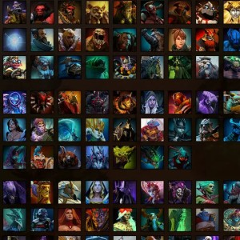
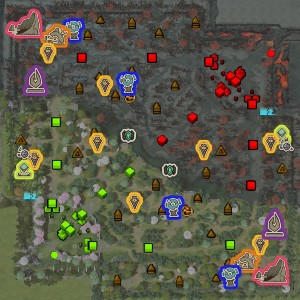
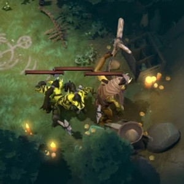
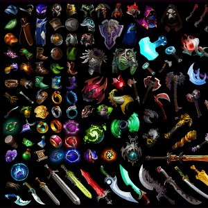

Dota 2
TL;DR
Dota 2 is a multiplayer online battle arena (MOBA) video game by Valve. The game is played in matches between two teams of five players, with each team occupying and defending their own separate base on the map. Each of the ten players plays as a powerful character known as a "hero" that all have unique abilities and differing styles of play. During a match, players collect experience and purchase items for their heroes to defeat the opposing team's heroes in player versus player combat. A team wins by being the first to destroy the other team's "Ancient", a large structure located within their base. Below, a more nuanced explanation is avalable, with the resources and the items sections most germane to the generation of the model.
Gameplay
The Heroes
The game begins with each of the 10 players being assigned to one of two teams: Radiant or Dire. Each player then picks one playable character (called a "hero") from a shared pool of 124 heroes to play for the duration of the game. Each hero can only be picked once; if Radiant chooses a certain hero, then Dire cannot choose that same hero. Each hero has their own design, strengths, and weaknessess. Generally, heroes are divided into two primary roles: core and support. Core heroes, also known as carry heroes, generally start the game as weak and voulnerable, but become more powerful as the game prgresses, thus becoming able to "carry" their team to victory. On the other hand, support heroes depend far less on the game's progression, so they are able "support" the cores until the game has progressed enough to push for victory. Like in basketball, each player on the team is assigned a particular position to play. In Dota, these positions are signified by numbers that rank the given hero's dependency on the game's resources: position 1, 2, 3, 4, and 5. Positions 1, 2, and 3 are generally considered cores as they are the most dependent on the game's resources, while positions 4 and 5 are considered support positions. Upon death, a hero must wait an amount of time to respawn. This time is determed by the hero's level at the time of death, so heroes take longer to respawn as the game progresses.
The Map
The Dire spawn in the top right corner while the Radiant spawn in the bottom left corner of the map. The playing field is split in two by the river which goes from the upper left corner to the bottom right corner. Each base is separated from the river by 3 sets of towers (known as tier 1, tier 2, and tier 3), a set of baracks, and the final group of towers (tier 4) guard the ancient. The paths that lead from the river to both of the bases are called lanes. The towers dwell in the lanes, designated as top, middle, and bottom. To destroy the enemy team's ancient and win the game, a team must destroy all the towers in a lane, and both the tier 4 towers. Upon destruction, each of the map's buildings (commonly called "objectives") reward the entire enemy team with a set gold bounty.
The Resources
The game has 2 primary resources: gold and experience. Players earn gold and experience through slaying heroes or computer-controlled entities called "creeps" and by claiming objectives. To earn gold from slaying a creep, a player must deal the final blow, called the "last hit", to the creep. When slain, every creep rewards the slayer a random amount of gold and experience in a range specified for that creep, and every hero yields a large bounty of gold and experience, split evenly among the slaying heroes. The bounty that a hero yields upon death depends on that hero's own gold, experience, and kill streak so that slaying cores generally rewards more than slaying supports. Also, this mechanic provides a greater advantage to teams that slay enemy hereos particularly as the game progresses. The bounty for a hero is almost always greater than any creep kill. Thus, by slaying creeps and enemy heroes, teams can gain a resource advantage over their enemy to finish the game. Accumulated gold can be used to purchase items, and experience earned can be used to upgrade the hero and its abilities.
The Items
Players are able to buy items that provide special abilities.
These items augment the power of their holder and allow for an advantage over heroes that either don't have as many items or don't have the right items.
Items are not limited to specific heroes, and can be bought by anyone any number of times.
In order to obtain an item, players must be able to afford it with gold that they have obtained from hero and creep bounties.
Items are an important part of the gameplay as most heroes, when played properly and in their ideal position on a team, are fairly equal in game impact.
Thus, the purchase of the correct item combined with individual player skill is often what leads to a team's victory.
Back to Home